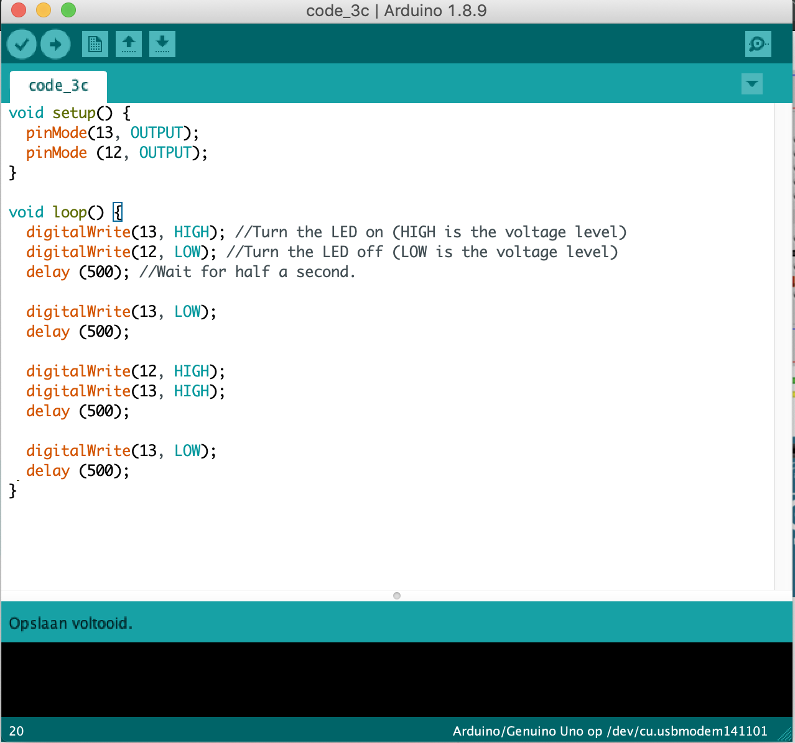
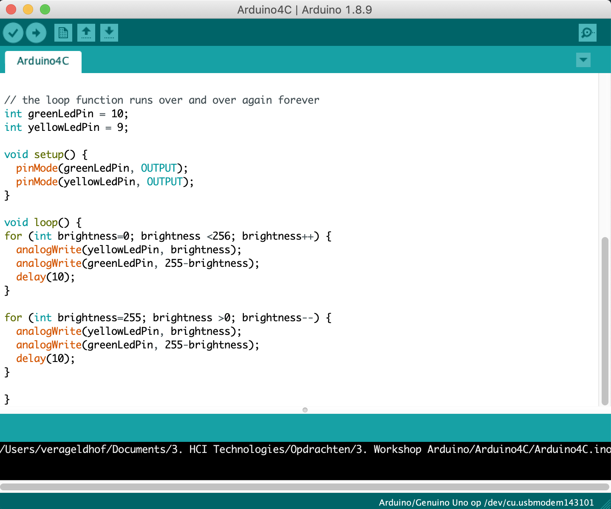
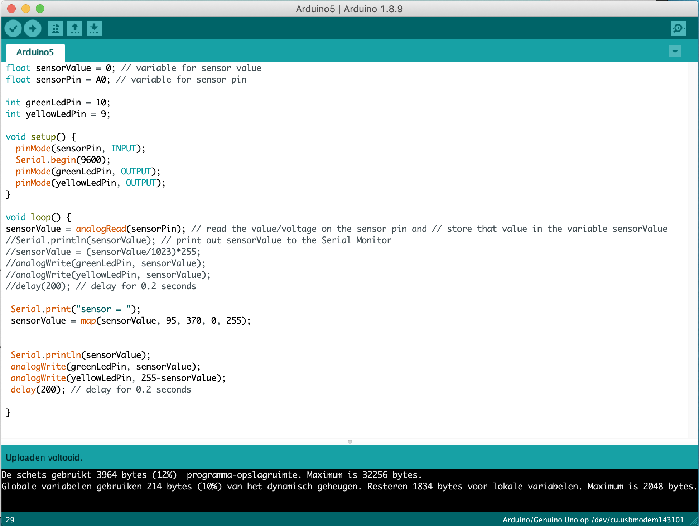
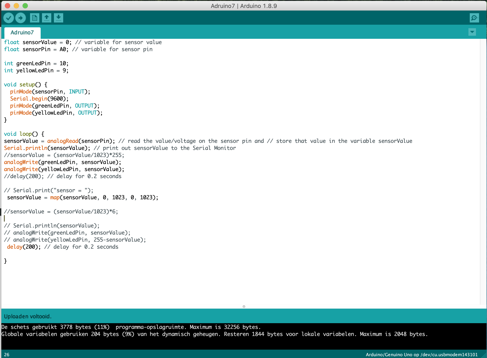
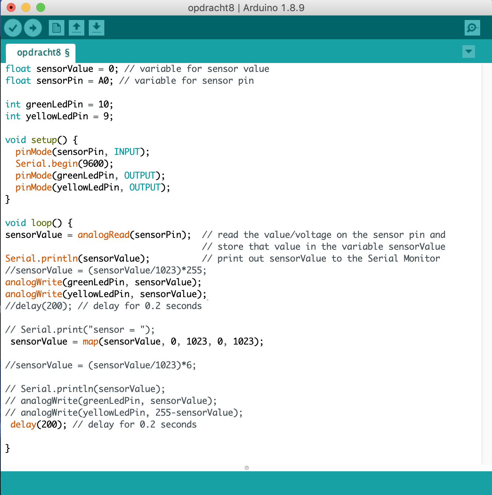
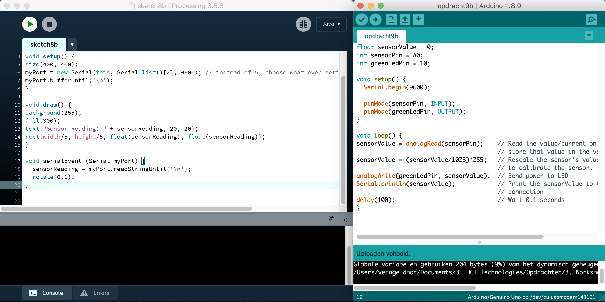
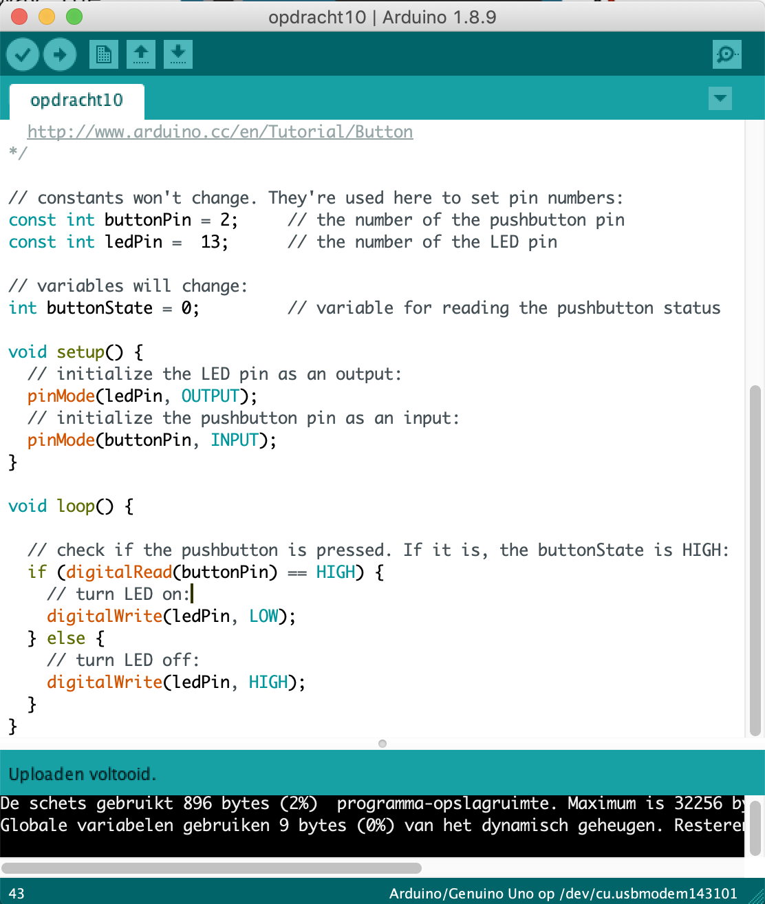
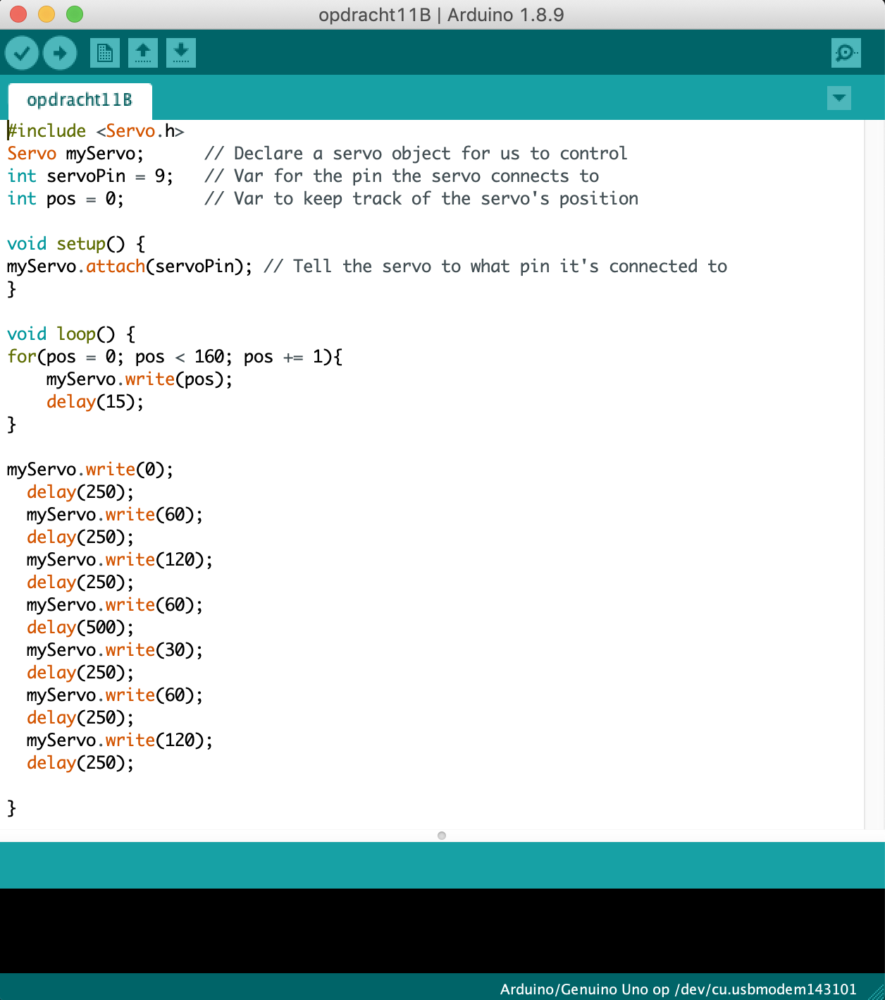
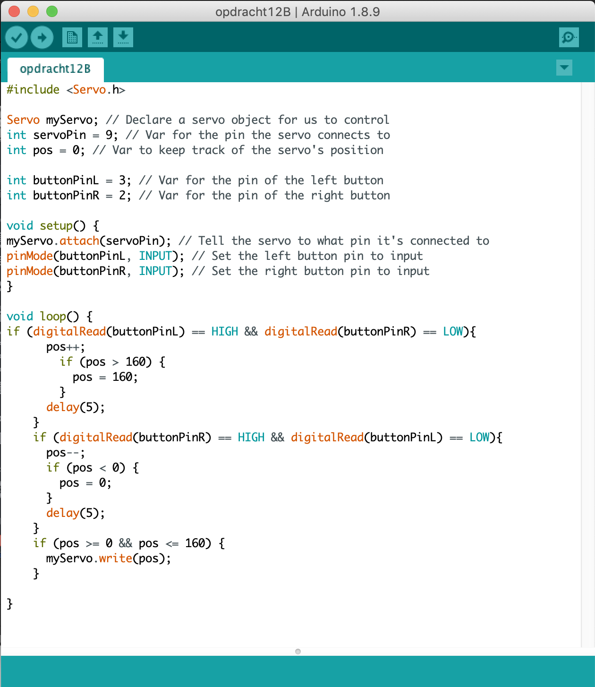

Workshop: Arduino
Assignment
Het maken van opdrachten uit de Arduino manual.
3c: Blink multiple LEDs
Met deze opdracht worden twee ledjes gekoppeld aan de arduino. Eerst zijn de twee ledjes tegelijkertijd gaan knipperen, daarna dat ze omstebeurten gingen knipperen. Als laatste was het de bedoeling dat de ene led twee keer zo snel gingen knipperen als de andere led. Dit wordt gedaan door een extra pinMode toe te voegen aan de code. In een loop wordt eerst het eerste led lampje aangezet en het tweede lampje blijft uit. Daarna wordt het eerste lampje weer uitgezet en het tweede lampje blijft aan. Dan wordt het eerste lampje aan en het eerste lampje wordt dan uitgezet. Als deze loop is uitgevoerd, wordt de loop opnieuw uitgevoerd.
4c: Fade LED – Analog Output
In plaats van alleen de LEDs aan en uit zetten, kunne we ook de helderheid van de LEDs bedienen. De analogWrite() functie staat ons toe om de helderheid van een LED van 0 (helemaal uit) naar 255 (helemaal aan) of er tussenin aan te geven. Bij deze opdracht wordt het ene LED lampje aan gezet, terwijl het andere LED lampje uit wordt gezet. Dit wordt zo gedaan dat er een fade in en een fade out ontstaat. Door middel van twee for loops worden de LED lampjes aangestuurd. De eerste loop zorgt ervoor dat de gele LED een fade in krijgt en de groene LED een fade out. De tweede loop creëert precies het tegenovergestelde. Zo ontstaat er dat de LED lampjes het tegenovergestelde van elkaar doen. Als het gele LED lampje een fade out krijgt dan heeft tegelijkertijd het groene LED lampje een fade in.
6c: Controlling a LED with a potmeter
In deze opdracht wordt er gebruikt gemaakt van een draaiknop (potmeter), die een analog input geeft aan de Arduino. De draaiknop zorgt ervoor dat de LED lampjes met de code van opdracht 4c worden uitgezet en aangezet. Er wordt een map() functie toegevoegd aan de code, die de plaats inneemt van de formule die eerder is gebruikt. Deze functie zorgt voor een value, fromLow, fromHigh, toLow en toHigh. De functie ziet er als syntax als volgt uit: map(value, fromLow, fromHigh, toLow, toHigh). Dit zorgt er weer voor dat het ene LED lampje een fade in heeft en tegelijkertijd heeft het ander LED lampje een fade out.
7: Control the LED with light
In de vorige opdracht wordt de LED gedimd met een potentiometer. In deze opdracht zal de LED bediend worden door een ander soort sensor. De sensor die nu wordt gebruikt is de LDR (Light Dependent Resistor), wat een gevoelige resistor is die het aantal licht meet. Als de sensor weinig licht meet, wat aan wordt gegeven met een laag getal, wordt de LED gedimd. Als de sensor veel licht meet, wat aan wordt gegeven met een hoog getal, wordt de LED niet gedimd en staat dus aan. De getallen die gemeten worden liggen tussen de 0 en de 1023.
8: Voltage Divider
De sensoren van opdrachten 5, 6 en 7 zijn gebaseerd op een vrij algemeen circuit in de elektronica genaamd voltage divider. The A0 - A5 pins van de Arduino zijn allemaal in staat om tussen de 0 en 5V te meten en dit om te zetten naar een getal tussen de 0 en 1023. Deze opdracht laat het aantal spanning wat langs de resistor komt manipuleren. Eerst worden er niks gestopt, als tweede wordt alle spanning gestopt. De spanning wordt dan op de eerste resistor en als laatste wordt de tweede resistor gestopt. De spanning komt eerst langs resistor 1. Als resistor 1 licht is , dan vangt deze wel iets van spanning op, omdat de spanning eerst langs r1 moet om naar r2 te gaan. Als r2 licht is, dan zal de spanning naar r1 gaan en dan gaat er niets naar r2, omdat de spanning bij r2 wordt gestopt en eerst langs r1 geleid de spanning dus naar r2. r1 is dus een verbindende factor naar r2.
9b: Arduino and Processing
In deze opdracht wordt er een extra programma gebruikt, processing. Processing is een flexibele software sketchbook en een taal om te leren hoe je code in een context of visual arts. De opdracht maakt een zwart rondje op het scherm, die je kan aanpassen door de resistor van de vorige opdracht af te sluiten en aan te zetten. In het programma Processing kan je het rondje veranderen in een andere vorm en stijl. Hier is het rondje in een vierkant gemaakt en is de kleur aangepast.
10f: Buttons
De simpelste sensor is een button. Een button functioneert door het afsluiten van een circuit en dit kan de Arduino zien. In deze opdracht worden de buttons op verschillende manieren gebruikt. Eerst werd er een button op de Arduino aangesloten, daarna werd er een tweede button aan toegevoegd. De twee buttons die worden gebruikt op de Arduino worden zo gebruikt, dat het licht aangaat als de eerste button wordt ingedrukt of als de tweede button wordt ingedrukt. Het licht gaat niet aan als allebei de buttons worden ingedrukt.
11b: Servomotor
Servomotoren zijn motoren die kunnen draaien naar een precieze positie. Ze zijn voor veel doeleinden toepasbaar, maar de meest opvallende toepassing is die van op afstand bestuurbare voertuigen. Ze worden bijvoorbeeld gebruikt om de wielen van een op afstandbestuurbare auto te sturen of om het roer van een op afstand bestuurbare boot te laten draaien. Een andere toepassing is om een beveiligingscamera uit te voeren om op iets specifieks te focussen. De meeste servo's kunnen niet volledig draaien. Meestal hebben ze een bereik van ± 180 °. In deze oefening wordt de servo bestuurt om een voorgeprogrammeerde beweging uit te voeren.
12b: Controlling the servo with inputs
In de vorige opdracht is de servo zo ingesteld dat hij op een grappige manier bepaalde posities en draaien maakt. In deze opdracht worden er twee buttons toegevoegd aan de Arduino. De linker buttons zorgt ervoor dat de servo naar links draait en de rechter button zorgt ervoor dat de servo naar rechts draait. Zo zijn eerdere opdrachten met elkaar gecombineerd.
13b: Sound
Wanneer je een luidspreker aansluit, kan het Arduino-bord geluid produceren. Dit gebeurt met een zogenaamde Piezo-luidspreker (ziet eruit als een kleine zwarte cilinder) die bestaat uit een plaat van twee verschillende metalen die kunnen trillen en dus geluid produceren. In deze opdracht worden noten verbonden aan frequentie, in de vorm van hertz. Een liedje is opgezocht, daarvan zijn de noten omgezet en dit wordt afgespeeld door de Piezo-luidspreker op de Arduino. Voor deze opdracht is het liedje twinkle, twinkle little star omgezet naar frequenties.